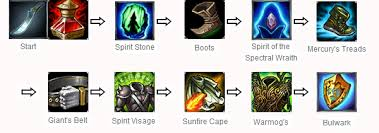

So, you want to learn how to build a top champion! Fantastic choice, my friend. Before we get started, lets look at an example of a normal item build for a top champion.
This is a standard item build for a tanky, more resilient champion. While the AD (Attack Damage) is fairly low, your health will be so high that you wont have to worry about not doing so much damage, considering you probably will not die. While keeping this in mind, you can use Mercury's Treads to gain a bonus +45% movement speed, as well as extra AD and armor. If this all dosent make sense to you now, thats okay! You'll learn slowly, but surely and figure out exactly how to build items properly.